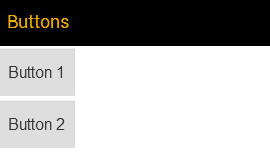
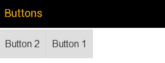

Layouting with FlexBox
Today's user interfaces often have to adapt to different screen sizes. Building user interfaces in a way so that a single layout reliably fits the available screen real estate has been challenging. The FlexBox control allows for developing layouts which adjust to the available space, thus, avoiding unused space or overflow. FlexBoxes can be nested to create more complex layouts.
The two main uses of a FlexBox control are:
- two-dimensional layouting
- flexible layouts
We will look into each of these below. But first let's start with a few basics.
Getting started
To use a flexible box layout simply create a FlexBox control and add any kind of controls to it, either by using the addItem method (option 1) or the items aggregration of a configuration object (option 2).
Option 1
var oMyFlexbox = new sap.m.FlexBox(); oMyFlexbox.addItem( new sap.m.Button({text: "Button 1"}) ); oMyFlexbox.addItem( new sap.m.Button({text: "Button 2"}) );
Option 2
var oMyFlexbox = new sap.m.FlexBox({ items: [ new sap.m.Button({text: "Button 1"}), new sap.m.Button({text: "Button 2"}) ] });
Used inside of a page in a mobile app (necessary code not shown here), the result would be something like this:

Layout properties
Some properties that affect the layout need to be set on the FlexBox control. Others can be attached to the controls placed inside the FlexBox via the layoutData aggregation.
For instance, the layout direction is set on the FlexBox:
var oMyFlexbox = new sap.m.FlexBox({ items: [ new sap.m.Button({text: "Button 1"}), new sap.m.Button({text: "Button 2"}) ], direction: "Column" });

The order, on the other hand, is attached to the button inside a FlexItemData object:
var oMyFlexbox = new sap.m.FlexBox({ items: [ new sap.m.Button({ text: "Button 1", layoutData: new sap.m.FlexItemData({order: 2}) }), new sap.m.Button({text: "Button 2"}) ] });

Please note that the FlexBox control is just a wrapper around the flexible box layout properties in CSS. The control renderer sets the CSS properties (including prefixed versions where necessary) on the appropriate HTML elements. The actual layouting is done by the browser.
The controls that you place inside the FlexBox are each wrapped in a DIV or LI element (depending on the renderType property). All of the elements are placed inside another DIV or UL container (again depending on the renderType). The outermost element represents the so-called flex container while its child elements are flex items. The HTML structure resulting from all of the examples above is something like this:
<div class="sapMFlexBox">
<div class="sapMFlexItem">
<button id="__button1">Button 1</button></div>
<div class="sapMFlexItem">
<button id="__button2">Button 2</button></div>
</div>
Please note that the layoutData properties that you can attach to a control are applied to its wrapper element (the one with the class sapMFlexItem). This is due to browsers currently only supporting these properties on certain elements like DIVs.
For convenience, there are two additional controls (HBox and VBox) which are FlexBoxes that are fixed to layout their children horizontally or vertically respectively.
Important flexible box layout concepts
Main axis and cross axis
A flexible box layout has a direction in which child elements are laid out. The default direction is Row and rows are laid out horizontally in reading direction. This defines the main axis. The cross axis in this case is vertical.
The layout direction property can be changed to Column resulting in a vertical main axis and a horizontal cross axis. This is important when we come to the align properties.
SIDE NOTE: If browsers were to support vertical text flows, the direction of a row could then also be vertical. For the time being this is not an issue and can be ignored.
In addition to Row and Column the flex direction can be set to RowReverse and ColumnReverse which will reverse the layout direction.
Two-dimensional Alignment
In a flexible box layout you can determine where the flex items will be aligned. Two properties are determining the alignment: justifyContent and alignItems. The first one, justifyContent, sets the alignment along the main axis while alignItems acts on the cross axis.
Both of these properties accept the values Start, Center and End. This gives you nine possible combinations. For example, justifyContent = End and alignItems: Start would place the items in the upper right corner of a horizonzal FlexBox. If you set the direction property to Column, the main axis would be vertical. With the same values for the alignment as above the items would be in the lower left.
By reversing the main axis with direction = ColumnReverse, you would make the layout start from the bottom. Which would make justifyContent = End refer to the top of the FlexBox. This can be a bit confusing. Just take it step by step.
For justifyContent there's an additional value: SpaceBetween?. This setting will place the first and the last item at the extremes of the main axis. Any other items will be distributed evenly between these two.
There are also additional values for alignItems: Baseline and Stretch. Baseline is a bit special. It will take the first line of text of each flex item and align their baselines. This can be useful if the font sizes differ.
Setting alignItems to Stretch will make the flex items take up the whole space along the cross axis of the FlexBox. This is very useful if all items should have the same size regardless of the amount of content.
Flexibility
If you want to let the browser handle the distribution of elements so that they always fill the available space along the main axis, you can set a flexibility factor on the flex items.
The property to control the flexibility is called growFactor which is set on a flex item object via FlexItemData on the layoutData aggregation. The flex layout algorithm will first determine the "natural" width of the flex items. If there is remaining space, this space will then be distributed among the flex items according to their relative growFactor.
So if a horizonzal flex container is 300px wide and it contains two elements which would normally each be 100px wide, then 100px would be remaining. Suppose both flex items have a growFactor of 1, they would both get 50px extra, making them 150px wide.
If the items had growFactors of 3 and 1 respectively, the first item would get 75px (¾ of 100px) of the remaining space while the second one would receive 25px (¼ of 100px). So the first item would be 175px wide, the second 125px.
A growFactor of 0 (the default) will make an item inflexible.
It's important to note that the flex algorithm distributes the remaining space not the whole space in the FlexBox. Therefore, the resulting widths of the items will not necessarily be proportional to the growFactors (which might be expected).
It is possible to achieve a proportional width according to the growFactor. The trick is to set the width of all items to 0 via CSS. The sum of the "natural" widths of all items is then also 0. The remaining space, however, now equals the full space of the FlexBox. This space is then distributed based on the growFactor.
For the example above (growFactor 3/1), setting the the width of the flex items to 0 via CSS will result in the first item being 225px (¾ of 300px) wide and the second 75px (¼ of 300px).
IMPORTANT: Once you set a growFactor on any item, the flex layout algorithm will ignore the justifyContent property of the FlexBox since the items will take up all available space anyway. There would be no difference between the different values.
For more examples of FlexBox usage, please take a look at the Demo App.